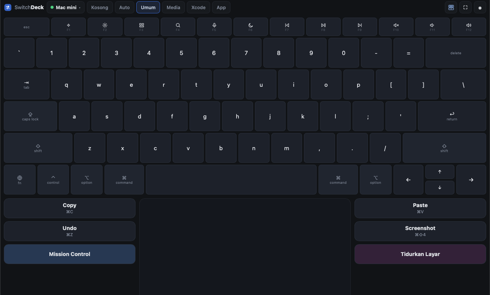
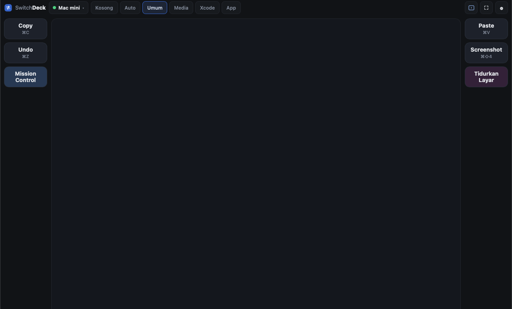
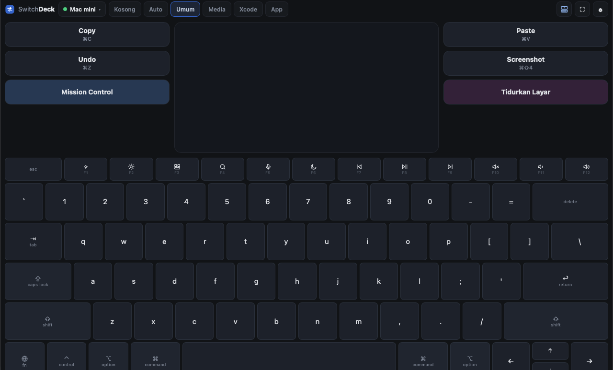
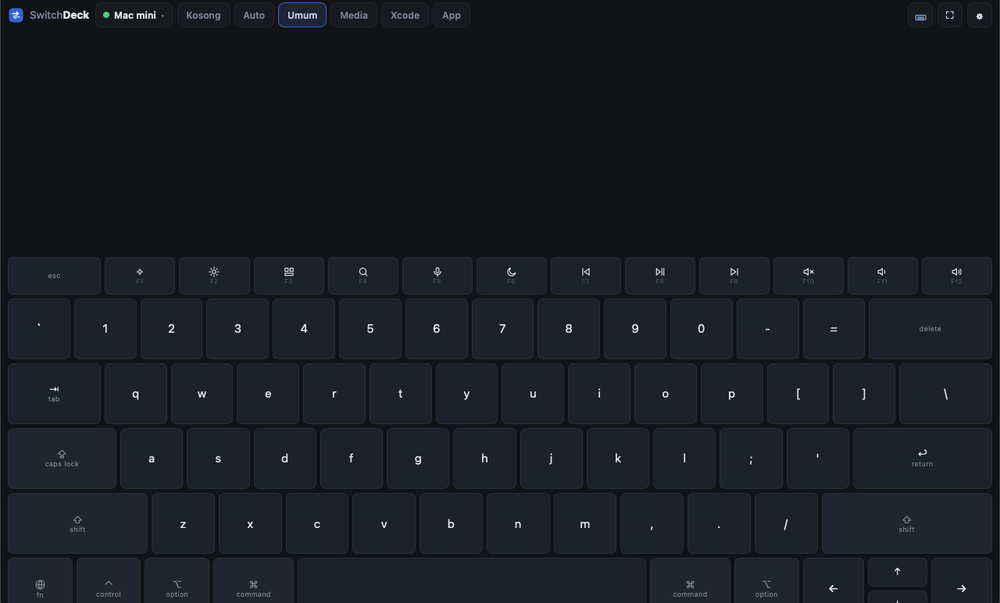
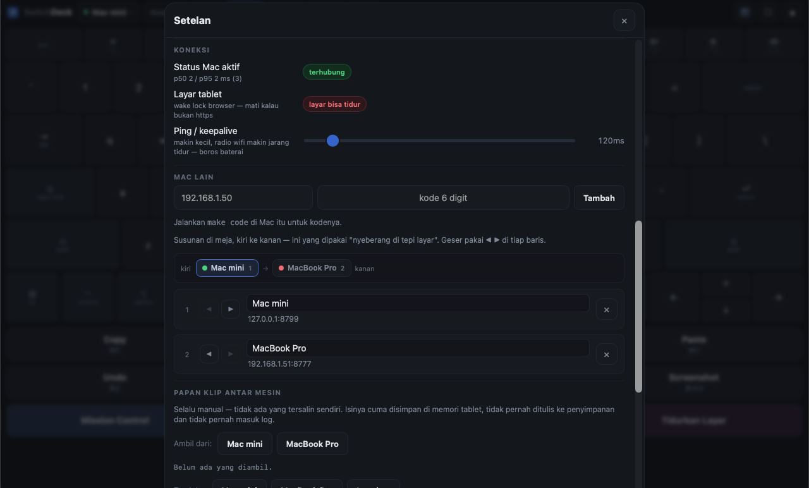
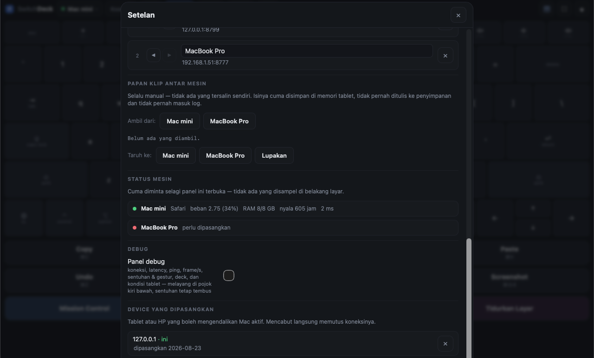
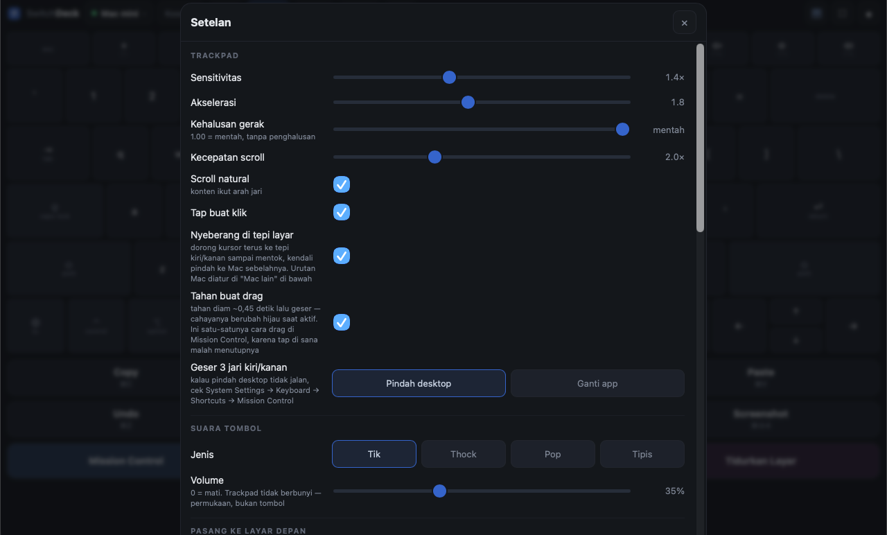
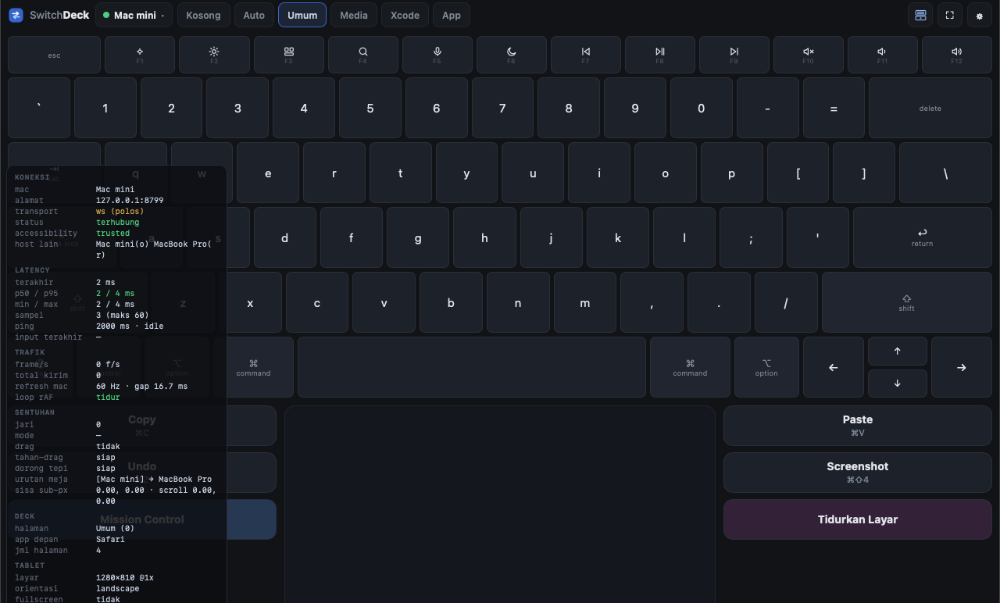

SwitchDeck
Tablet Android jadi trackpad + keyboard + deck makro untuk Mac — lewat browser, tanpa install apa pun di tablet.
Satu tablet bisa menyetir beberapa Mac sekaligus: semua tersambung barengan, dan kendali berpindah dengan mendorong kursor ke tepi layar.

Apa ini, dan apa yang bukan
Ini: permukaan kendali. Tablet mengirim gerakan, ketikan, dan id tombol; Mac yang menjalankannya.
Bukan:
- Bukan screen mirroring / remote desktop. Layar Mac tidak pernah dikirim ke tablet. Kalau butuh itu, pakai Universal Control atau VNC.
- Bukan untuk dipakai dari luar rumah. Dirancang untuk satu jaringan lokal.
- Bukan produk untuk orang lain. Tidak ada akun, tidak ada cloud, tidak ada multi-user.
Yang dibutuhkan
| Mac | macOS dengan Xcode command line tools (untuk swift build) dan Node.js 18+ |
| Tablet / HP | apa saja yang punya browser modern dan layar sentuh multi-jari |
| Jaringan | tablet dan Mac di wifi yang sama. Lewat Tailscale juga jalan, tapi latensinya lebih tinggi |
Pasang di Mac
git clone https://github.com/fadielse/switch-deck.git
cd switch-deck
make build # compile helper Swift (deckd-input)
make deps # dependency Node untuk server (deckd)
make doctor # cek izin & kesehatan
make deckd # jalankan servermake deckd akan mencetak sesuatu seperti ini:
Buka di tablet: http://192.168.1.213:8777/
Kode pairing: 858417Biarkan terminal itu terbuka. Untuk menjalankannya otomatis tiap Mac nyala, lihat Jalan otomatis saat Mac nyala.
Izin macOS
SwitchDeck menyuntik input, jadi macOS mewajibkan izin Accessibility.
make doctorKalau tertulis trusted : TIDAK, buka:
System Settings → Privacy & Security → Accessibility, lalu tambahkan binary ini:
<folder-repo>/mac/deckd-input/.build/release/deckd-input📸 Butuh screenshot manual: panel System Settings → Privacy & Security → Accessibility dengan
deckd-inputdicentang. Simpan sebagaidocs/img/ss-accessibility.png.
Dua hal yang sering bikin bingung:
- Izin menempel pada aplikasi induk. Kalau
deckddijalankan dari Terminal, yang perlu diizinkan bisa jadi Terminal-nya. Kalau dijalankan lewat launchd (make install), yang diizinkan binary-nya langsung.make doctormencetak rantai prosesnya supaya kelihatan siapa induknya. - Setelah menambahkan izin, jalankan ulang
deckd. macOS tidak memberi izin ke proses yang sudah jalan.
Untuk fitur pindah desktop dan App Exposé, macOS juga akan meminta izin Automation (System Events) sekali saat pertama dipakai.
Sambungkan tablet (pairing)
- Buka alamat yang dicetak
make deckddi browser tablet, misalnyahttp://192.168.1.213:8777/. - Masukkan kode 6 digit yang tercetak di terminal.
- Tap Pasangkan.
Kode hanya sekali pakai dan ada rate-limit — tebakan beruntun langsung dijeda. Setelah berhasil, tablet menyimpan token-nya sendiri, jadi tidak perlu pairing lagi.
Lupa kodenya? make code mencetaknya lagi.
📸 Butuh screenshot manual: layar pairing di tablet aslinya. Simpan sebagai
docs/img/ss-pairing-tablet.png.
Mengenal layar
Dari kiri ke kanan di bar atas:
| Bagian | Fungsi |
|---|---|
| Logo SwitchDeck | penanda; nama menghilang di layar sempit |
| Chip Mac | titik status + nama Mac yang sedang disetir. Tap untuk pindah Mac (kalau ada lebih dari satu) |
| Tab halaman deck | Kosong, Auto, lalu nama tiap halaman dari deck.json. Bisa di-scroll ke samping |
| Tombol tata letak | berputar antara 4 susunan; ikonnya menggambarkan susunan yang sedang dipakai |
| ⛶ | fullscreen |
| ⚙ | setelan |
Bar atas tingginya tetap — tidak pernah tumbuh walaupun nama app di tab Auto panjang.
Trackpad
Area besar di tengah. Sentuhan dikonfirmasi oleh cahaya lembut yang mengikuti jari — dua jari untuk scroll berarti dua cahaya.
| Gerakan | Hasil |
|---|---|
| Satu jari geser | gerakkan kursor |
| Satu jari tap | klik kiri |
| Dua tap cepat | dobel klik — buka file, pilih kata |
| Dua jari geser | scroll |
| Dua jari tap | klik kanan |
| Tap lalu tekan lagi, geser | drag |
| Tahan diam ~0,45 detik lalu geser | drag — cahayanya berubah hijau saat aktif |
| Tiga jari geser kiri/kanan | pindah desktop (atau ganti app — bisa dipilih di setelan) |
| Tiga jari geser atas | Mission Control |
| Tiga jari geser bawah | App Exposé |
Kenapa "tahan buat drag" penting: di Mission Control, tap pertama justru memilih window dan menutup Mission Control, jadi gestur "tap lalu tekan" tidak akan pernah bisa dipakai di sana. Tahan-lalu-geser adalah satu-satunya cara memindahkan window antar desktop dari tablet.
Trackpad tidak berbunyi — dia permukaan, bukan tombol. Suara ada di keyboard dan deck, sebagai pengganti travel tombol yang tidak dimiliki kaca.
Keyboard
Tata letaknya mengikuti Apple Magic Keyboard US: nama tombol sama, lebar sama, fn row setinggi dua pertiga, arrow inverted-T.
- Modifier bersifat sticky: tap = aktif sekali, tap lagi = terkunci, tap lagi = mati. Bisa juga ditahan sambil menekan huruf dengan jari lain.
- fn row punya dua peran seperti hardware: aksi tercetak (brightness, volume, media) secara default, dan F1–F12 polos kalau
fnaktif. - Caps Lock adalah toggle di tablet, bukan tombol yang dikirim — macOS memperlakukan caps sebagai state hardware yang tidak bisa disetel lewat event.
- Tombol yang ditahan mengulang (jeda 450 ms, lalu tiap 45 ms). Modifier dan media key sengaja tidak mengulang.
- Keluar dari mode keyboard melepas semua modifier, jadi tidak mungkin ada modifier nyangkut di Mac.
Ketikan dikirim sebagai karakter apa adanya, jadi hasilnya tidak bergantung layout keyboard di Mac. Shortcut dikirim sebagai keycode dengan modifier benar-benar ditahan, karena chord harus sampai sebagai chord.
Deck
Tombol makro di kiri-kanan trackpad (di portrait: satu grid di atas). Isinya datang dari:
~/.config/switchdeck/deck.jsonFile itu dibuat otomatis saat pertama jalan, dan halaman App-nya hanya diisi aplikasi yang benar-benar terpasang — jadi tidak ada tombol mati.
Edit file itu, semua tablet menggambar ulang seketika — tanpa reconnect, tanpa restart. Salah ketik JSON akan menyisakan deck terakhir yang benar di layar plus peringatan, bukan mengosongkannya.
Bentuk file
{
"pages": [
{
"name": "Umum",
"keys": [
{ "id": "copy", "label": "Copy", "hint": "⌘C",
"action": { "type": "shortcut", "keys": ["cmd", "c"] } },
{ "id": "sleep", "label": "Tidurkan Layar", "color": "#3a2440",
"action": { "type": "shell", "command": "pmset", "args": ["displaysleepnow"] } }
]
},
{
"name": "Xcode",
"match": ["Xcode"],
"keys": [
{ "id": "xc-build", "label": "Build", "hint": "⌘B",
"action": { "type": "shortcut", "keys": ["cmd", "b"] } }
]
}
]
}Field per tombol
| Field | Wajib | Arti |
|---|---|---|
id | ya | nama unik; ini satu-satunya yang dikirim tablet |
label | — | tulisan di tombol (default: id) |
hint | — | baris kecil di bawah label |
color | — | warna latar, misal #2c405c |
host | — | jalankan di Mac lain — lihat tombol lintas mesin |
action | ya | apa yang dijalankan |
Tipe action
| Type | Contoh |
|---|---|
shortcut | { "type": "shortcut", "keys": ["cmd", "shift", "4"] } |
text | { "type": "text", "text": "alamat@email.com" } |
media | { "type": "media", "code": 16 } — kode NX_KEYTYPE_* (play 16, next 17, prev 18, mute 7, vol up 0, vol down 1) |
open_app | { "type": "open_app", "app": "Xcode" } |
url | { "type": "url", "url": "https://github.com" } |
applescript | { "type": "applescript", "script": "display notification \"halo\"" } |
shell | { "type": "shell", "command": "pmset", "args": ["displaysleepnow"] } |
shell menerima command + array argumen, bukan satu baris perintah. Tidak ada yang sampai ke shell untuk diurai ulang, jadi tidak ada tempat untuk injeksi.
Halaman yang ikut app aktif
Beri halaman field match:
{ "name": "Xcode", "match": ["Xcode", "com.apple.dt.Xcode"], "keys": [ ... ] }Isinya bisa nama app atau bundle id. Lalu pilih tab Auto di tablet: deck akan mengikuti app yang sedang di depan (Xcode ke depan → halaman Xcode).
Mengikuti app itu MODE, bukan perilaku default. Deck yang menata ulang dirinya saat tangan sedang meraih tombol lebih buruk daripada deck yang diam. Memilih halaman = mengunci. Tab Auto hanya muncul kalau memang ada halaman yang minta app.
Perpindahannya di-debounce 250 ms: alt-tab melewati tiga app harus mendarat di yang terakhir, bukan berkedip lewat ketiganya.
Tata letak
Tombol tata letak di bar atas berputar antara empat susunan. Ikonnya memakai satu kosakata: dua garis = tombol, satu titik = trackpad.
1. Trackpad saja

Trackpad mengambil semua ruang yang tidak dipakai deck. Kalau halaman deck disetel Kosong, trackpad benar-benar sepenuh layar.
2. Keyboard di atas, trackpad di bawah
Keyboard menyusutkan trackpad, bukan menggantikannya — deck tidak pernah hilang dari layar.
3. Trackpad di atas, keyboard di bawah

Isi yang sama, dibalik.
4. Keyboard saja

Trackpad hilang dan keyboard turun ke bawah dengan ukuran yang sama seperti mode sebelumnya — bukan melar. Keyboard yang dimelarkan sepenuh tablet punya baris lebih tinggi dari jempol, dan itu lebih susah diketik, bukan lebih enak.
Pilihan tata letak diingat per perangkat.
📸 Butuh screenshot manual: tampilan portrait di tablet (deck jadi satu grid di atas, trackpad mengambil sisanya). Simpan sebagai
docs/img/ss-portrait.png.
Beberapa Mac sekaligus
Semua Mac tersambung barengan, tetapi hanya satu yang menerima input pada satu waktu. Tablet yang memegang semua koneksi — Mac tidak pernah saling bicara, jadi satu Mac mati tidak menjatuhkan yang lain.
Menambahkan Mac kedua
Di Mac yang baru: make deckd, lalu make code untuk kodenya. Di tablet: ⚙ → Mac lain → isi alamat + kode → Tambah.

Urutan meja
Strip di atas daftar menggambar susunan fisik Mac di meja, kiri ke kanan:
kiri ● Mac mini 1 → [● MacBook Pro 2] → ● mini PC 3 kananGeser dengan tombol ◀ ▶ di tiap baris. Nomornya juga muncul di daftar, jadi daftar vertikal itu tidak perlu dibayangkan sebagai baris horizontal.
Urutan ini bukan kosmetik — ini yang dibaca fitur nyeberang di bawah.
Nyeberang di tepi layar
Dorong kursor terus ke tepi kanan sampai mentok, dan kendali pindah ke Mac di sebelah kanannya. Kursor di Mac tujuan muncul di tepi seberangnya, di ketinggian yang sama, jadi terasa menyambung.
Supaya tidak pindah karena mentok biasa saat kerja, syaratnya dua-duanya harus terpenuhi: ~90 px gerakan tertelan dan dorongan berlanjut minimal ~0,1 detik. Ada jeda 0,7 detik setelah pindah. Bisa dimatikan di setelan.
Kalau tidak mau pindah, panel debug menyebut sebabnya (nyeberang gagal): tidak ada Mac di sisi itu, atau Mac-nya tidak terhubung.
Tombol yang jalan di Mac lain
Beri sebuah tombol deck field host:
{ "id": "build", "label": "Build", "host": "MacBook Pro",
"action": { "type": "shortcut", "keys": ["cmd", "b"] } }Tombol itu selalu jalan di Mac yang disebut, apa pun yang sedang disetir — build di Mac mini sambil terus mengetik di MacBook.
Dua hal yang mengikuti dari aturan "tablet cuma kirim id":
- Id-nya diresolusi di mesin tujuan.
host: "MacBook Pro"berarti "jalankan macro bernamabuilddi sana", dandeck.jsonmilik MacBook yang menentukanbuilditu apa. Tiap mesin tetap pemilik arti id-nya sendiri. actiondi sebelahhostadalah yang jalan lokal, di mesin pemilik file ini. Tidak pernah dikirim ke mana pun.
host dicocokkan dengan nama yang tampil di daftar Mac (atau alamatnya). Tombolnya digambar bergaris putus-putus dengan nama mesin tujuan, dan redup kalau mesin itu tidak terhubung.
Papan klip antar mesin
⚙ → Papan klip antar mesin.

- Ambil dari Mac X → isinya disimpan di tablet.
- Taruh ke Mac Y → isinya ditulis ke papan klip Mac itu.
Selalu manual, tidak pernah otomatis. Sync papan klip otomatis antar mesin terdengar seperti kenyamanan dan sebenarnya kebocoran — password manager menaruh password di papan klip, dan menyalinnya ke mesin lain tanpa diminta tidak kelihatan sampai terlambat.
Batasnya: teks saja, maksimal 16 KB, disimpan di memori tablet saja (hilang saat reload, tidak pernah menyentuh penyimpanan), dan tidak pernah masuk log di titik mana pun.
Status mesin
⚙ → Status mesin. Satu baris per Mac: app yang sedang di depan, beban, memori, lama nyala, latency, dan apakah Accessibility sudah diizinkan.
Beban ditampilkan per core karena itu angka yang artinya sama di laptop 4-core dan desktop 12-core — dan itu justru gunanya halaman ini. Warnanya berubah kuning di atas 70%.
Datanya hanya diminta selagi panel setelan terbuka. Tidak ada yang disampel di belakang layar.
Setelan

| Setelan | Arti |
|---|---|
| Sensitivitas | pengali gerakan kursor |
| Akselerasi | seberapa jauh gerakan cepat melipatgandakan jarak |
| Kehalusan gerak | 1.00 = mentah tanpa penghalusan; makin kecil makin halus tapi menambah 1–2 frame jeda |
| Kecepatan scroll | pengali scroll dua jari |
| Scroll natural | konten mengikuti arah jari |
| Tap buat klik | matikan kalau sering salah klik |
| Nyeberang di tepi layar | serah-terima kursor antar Mac |
| Tahan buat drag | tahan diam lalu geser untuk drag |
| Geser 3 jari kiri/kanan | Pindah desktop atau Ganti app |
| Suara tombol | jenis (Tik / Thock / Pop / Tipis) dan volume; 0 = mati. Trackpad memang tidak berbunyi |
| Pasang ke layar depan | lihat bagian PWA di bawah |
| Ping / keepalive | makin kecil, radio wifi makin jarang tidur — lebih boros baterai. Saat menganggur, ping otomatis melambat ke 2 detik |
| Mac lain | tambah, beri nama, urutkan, hapus |
| Papan klip antar mesin | ambil / taruh |
| Status mesin | kondisi tiap Mac |
| Panel debug | lihat bawah |
| Device yang dipasangkan | tablet/HP yang boleh mengendalikan Mac aktif; mencabut langsung memutus koneksinya |
Semua setelan disimpan per perangkat.
Panel debug
⚙ → Debug → Panel debug. Melayang di pojok kiri bawah, sentuhan tetap tembus ke bawahnya.

| Grup | Isi |
|---|---|
| koneksi | Mac aktif, alamat, transport (ws/wss), status, izin Accessibility, ringkasan Mac lain |
| latency | rtt terakhir, p50/p95 (berwarna sesuai ambang), min/max, jumlah sampel, mode ping aktif/idle |
| trafik | frame/detik, total kirim, refresh Hz Mac, status loop animasi |
| sentuhan | jumlah jari, mode, drag, jarak gestur vs ambang, sisa sub-piksel |
| deck | halaman aktif, app depan, jumlah halaman |
| tablet | ukuran layar, orientasi, fullscreen, wake lock, secure context, status audio |
Saat mati, panel ini tidak memakan apa pun — timer-nya hanya ada selama panel terbuka.
Kalau sesuatu tidak jalan, mulai dari sini. Dua baris yang paling sering menjawab:
nyeberang gagal— kenapa serah-terima kursor tidak terjadi.injector nolak— Mac itu menolak sebuah frame. Hampir selalu berarti binary Swift di mesin itu lebih lama dari client-nya (git pulltanpamake build).
Pasang ke layar depan (PWA) & HTTPS
⚙ → Pasang ke layar depan. Berjalan tanpa bar browser, dibuka lewat ikon seperti aplikasi biasa.
Kalau tombolnya tidak muncul, panelnya menyebutkan alasannya — bukan menampilkan tombol mati. Di sebagian browser jalurnya lewat menu ⋮ → Add to Home screen.
HTTPS itu peningkatan, bukan syarat. Aplikasi disajikan di dua port sekaligus:
http://<ip>:8777/ selalu ada
https://<ip>:8778/ setelah `make cert`Kenapa perlu? Wake Lock (menahan layar tablet tetap menyala) hanya jalan di secure context. Jadi kalau layar tablet suka tidur sendiri, itu tandanya sedang lewat HTTP.
make cert # bikin sertifikat lokal
# lalu restart deckd, dan di tablet buka https://<ip>:8778/Halaman /setup di server memandu pemasangan sertifikat CA di tablet.
📸 Butuh screenshot manual: dialog Add to Home screen di browser tablet. Simpan sebagai
docs/img/ss-install-pwa.png.
Jalan otomatis saat Mac nyala
make install # pasang sebagai layanan launchd
make status # cek jalan atau tidak
make uninstall # cabut lagiPenting: launchd tidak punya aplikasi induk yang bisa "meminjamkan" izin Accessibility-nya. Jadi binary deckd-input harus diizinkan langsung, bukan Terminal. make doctor mencetak rantai proses supaya jelas siapa yang sebenarnya perlu dicentang.
Kalau ada masalah
| Gejala | Kemungkinan besar |
|---|---|
| Kursor tidak bergerak sama sekali | Izin Accessibility. Jalankan make doctor — kalau trusted: TIDAK, izinkan lalu jalankan ulang deckd |
| Tablet tidak bisa membuka alamatnya | Beda jaringan, atau firewall Mac. Cek dengan make ip |
| Kode pairing selalu salah | Kode sekali pakai. Ambil yang baru dengan make code |
| Layar tablet tidur terus | Sedang lewat HTTP. Wake Lock butuh HTTPS — make cert |
| Satu fitur jalan di satu Mac tapi tidak di Mac lain | Mac itu belum di-make build setelah git pull. Panel debug akan menampilkan injector nolak |
| Nyeberang di tepi tidak terjadi | Cek urutan meja di ⚙ → Mac lain, dan baris nyeberang gagal di panel debug |
| Gestur tiga jari tidak pindah desktop | Cek System Settings → Keyboard → Shortcuts → Mission Control masih aktif |
| Muncul popup asing saat menahan dua jari | Itu fitur browsernya, bukan SwitchDeck. Coba browser lain — misalnya Vivaldi di Android memunculkan popup QR yang tidak bisa ditekan oleh halaman |
| Dobel tap tidak membuka apa-apa | Pastikan make build sudah dijalankan; perbaikan click count ada di sisi Swift |
Masih buntu? Nyalakan panel debug dan baca grup koneksi — hampir semua pertanyaan "kenapa diam" terjawab di situ.
Daftar perintah make
| Perintah | Fungsi |
|---|---|
make build | compile helper Swift |
make deps | install dependency Node |
make deckd | jalankan server |
make doctor | cek izin, rantai proses, kesehatan |
make code | cetak ulang kode pairing |
make ip | alamat Mac di jaringan lokal |
make cert | buat sertifikat untuk HTTPS |
make install / make uninstall | pasang / cabut layanan launchd |
make status | status layanan |
| Tes | |
make e2e | rantai penuh WebSocket → deckd → deckd-input |
make client | semua cek sisi client (tanpa Mac, tanpa build, tanpa izin) |
make idle | memastikan client membiarkan CPU tidur |
make debug-panel | memastikan panel debug tergambar di semua kondisi |
make dblclick | memastikan dobel tap jadi dobel klik sungguhan |
make selftest | uji injeksi input langsung |
make verify-copy | uji rantai penuh sampai clipboard macOS |
make latency | ukur latency |
Cara kerjanya di dalam
Tablet (browser) ──WebSocket──▶ deckd (Node) ──stdin JSON──▶ deckd-input (Swift) ──▶ macOS
│ CGEvent
└── deck.json, token device, pairingTiga proses, tiga tanggung jawab:
- Client web — semua UI. Diedit paling sering, tidak perlu compile.
deckd(Node) — router: WebSocket, token, deck, validasi. Tidak tahu apa itu CGEvent.deckd-input(Swift) — satu-satunya yang menyentuh API macOS. Semua kode khusus OS dikurung di sini, supaya menambah Windows nanti tidak menyentuh dua lapisan lainnya.
Aturan yang berlaku sejak awal dan tidak pernah dilonggarkan: tablet mengirim id, bukan perintah. Tablet tidak pernah tahu isi action sebuah tombol; dia hanya tahu id dan label. Setiap frame divalidasi di deckd sebelum diteruskan — angka tidak berhingga, keycode di luar jangkauan, nama modifier ngawur, dan teks kepanjangan semuanya ditolak, bukan diam-diam diperbaiki.